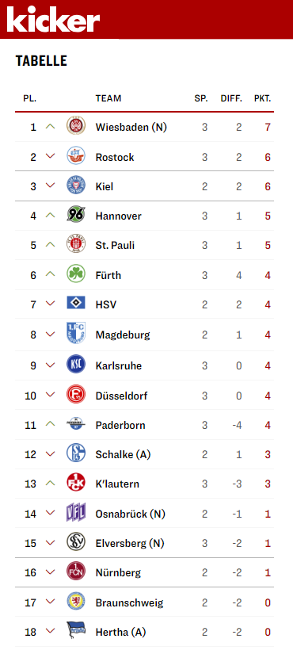

SVWW vs. Karlsruhe @ 2023-08-18
My first home game in this season
 1:0
1:0

I already had my season ticket on the first matchday of the 2023/2024 season, but was unable to get into the stadium for the team’s first home game and thus missed the 1:1 draw against Magdeburg.
First Impressions
So, Friday was my premiere on my season seat West 3, Row 1, Seat 1. That this seat was free when I booked it was a coincidence, but being so close to the pitch appealed to me. In front of me, the concrete railing of the spectator block, where I can put my beer, and directly below it, the SVWW coach’s bench under a plexiglass roof. You can hardly get any closer to the team.
However, the division of the row of seats is quite stupid, with the separation of Block West 2 and West 3 being quite arbitrary. With the result that I have to push my way to seat 1 across almost 20 seats if I am late. From the entrance of block West 2, on the other hand, it would only be just under 10 seats, but the stewards won’t let me get to my seat via West 2 because of my card and for the sake of German order :|
My seat neighbour on the right side is a man of the “Do I have to talk?” type who can hardly get his teeth apart even during the game. On my left, however, sits a nice older lady with short grey hair who must already be part of the inventory. A permanent season ticket holder, I guess, who doesn’t yell all the time either, but seems to be a true fan. The first question directed at me was “But you weren’t there for the first game!?”, which immediately triggered a kind of guilt in me, “Yes, I didn’t cheer for them in the first game. I’m sooo sorry”. We’ll get on well, especially as I took her deposit cup at half-time and cashed it in. We’re already friends, even if I don’t know her name yet.
Speaking of beverage supply: The club has a lot of stands around the stadium, but they are so badly organised that it’s hard to make it back to your seat in time. There were four staff in the snack van right next to Block West 3, one for ordering and collecting money and the other three for serving. The cashier was so slow that the other three had nothing to do the whole time and the queue in front of the stand got longer and longer and some people just gave up. Dear operator: This would happen much faster with two cashiers. It may be that they are all volunteers, but that can be organised much better for the benefit of the fans!
In the row directly behind me sits a group of older men who spout rather platitudinous football wisdom all the time. These guys would be a perfect model for the German (but unfortunately already deceased) comedian Loriot :D
Sitting next to them, however, are two or three guys in their 50s who don’t really have their emotions under control. One of them, in particular, yells “Referee, hang yourself” or something similarly stupid and insults opposing players when they go down in a tackle. I, on the other hand, only ever shouted positively at my own boys. “Let’s go”, “Go on, go on, go on”. And of course I sing along, because no one here notices how “well” I can do that ;)
The Game
The club has of course strengthened itself for the new season with new players in all sections of the team, whom I have now seen play for the first time. And unfortunately, some of them, such as Brooklyn Ezeh and Benedikt Hollerbach, who grew on me during the few games last year, have moved to other clubs.


But we quickly saw that our coach, Markus Kauczinski, knows his ex-club Karlsruher FC well. At the beginning of the first half, the players of this traditional club directly tried to overrun our team, seen by 10,626 spectators. There was a lot of pressure on the defence, but it held up magnificently. There was always a Wiesbaden leg between the ball and the goal and we limited ourselves to counterattacks, which led to success in the 22nd minute when the newcomer from Bayern Munich Lee Hyun-Ju marked the 1:0.
The rest of the first half was quite even, because Karlsruhe had lost the momentum a little bit, but they found it again at the beginning of the second half. Again, the game ran in only one direction, our goal, but the last 16 metres, in the box, were impregnable for them and when they did manage it, they failed because of our goalkeeper Florian Stritzel.
Conclusion
SV Wehen Wiesbaden is certainly the underdog in the 2. Bundesliga and no fan expects that at the end of the season it will be about more than keeping the league. I like underdogs and am therefore completely thrilled about this victory, especially since the table looked really good at the end of the day:
In two weeks, an even bigger German football heavyweight will come to Wiesbaden: Schalke 04. Let’s see if the boys have grown a few more legs by then. We will need them …
You can interact with this article (applause, criticism, whatever) by mention it in one of your posts or by replying to its syndication on Mastodon, which will also be shown here as a Webmention ... or you leave a good old comment with your GitHub account.
Webmentions
No Webmentions yet...
In case your blog software can't send Webmentions, you can use this form to submit me a mention of this article...
Related


 There are many Mastodon instances out there.
Tell me yours and I will redirect you to the share dialog of your server:
There are many Mastodon instances out there.
Tell me yours and I will redirect you to the share dialog of your server:
Comments